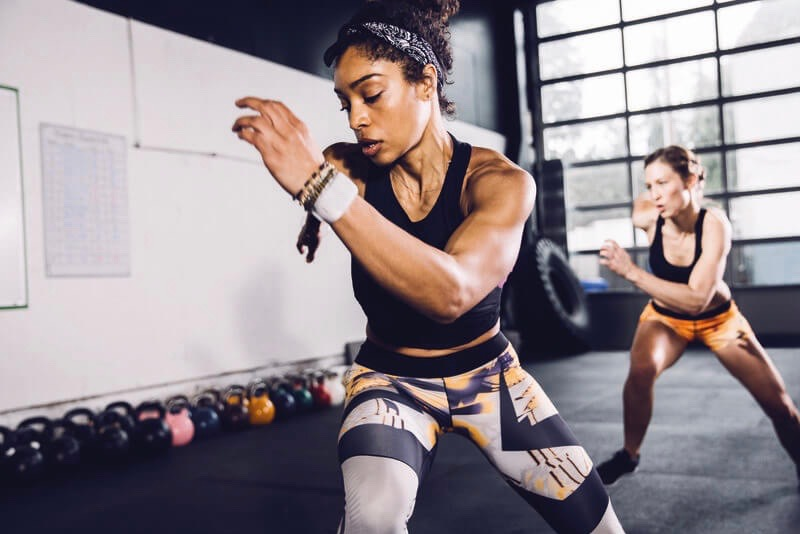

Working Out Is About Way More Than Weight Loss
Whether it's the woman who actually wants to put on muscle and see the number on the scale go up or the guy that wants to run a 10K in under 40:00, there's so much more to fitness than just losing weight! I know we often talk about it on the Runtastic Blog because, the reality is, there are a lot of people out there looking to lose weight as a means to get healthy. So, acknowledging both sides of the coin, no matter what your goal may be, it's really important that you feel good in your skin, you feel energized and empowered and you're waking up every day putting your best self forward.
A healthy lifestyle is more than just the physical changes
I always say that exercise and a healthy diet (and ultimately feeling your best) transcend into so many other areas of your life. It's not just about looking in the mirror, it's more about the confidence you have at the workplace and in your relationships. It's about the courage and perhaps a bit more power you have ignited to give ideas, speak your mind and go for the prize.
According to the American Psychological Association, Jennifer Carter, PhD, counsels patients in a walk and talk format - the way that we oftentimes have the Runtastic Content Marketing Team weekly meeting on a nice day. Dr. Carter has found that movement (walking in particular) is helpful in getting people to open up and explore their feelings and iron out their issues. She really emphasizes the importance of exercise in her field of work. That boost of endorphins and sense of accomplishment that inevitably comes with exercise cannot be ignored. And we all know how amazing we feel after a great sweat session, right?
It's all about getting the workout in
In fact, research has shown that it’'s not really even about how fast or how far you ran, how long your session was or how much weight you lifted or push-ups you completed, it's more about finishing a workout in general (or not) that gives these feelings. So whenever you think you don't have the energy or time to get in a workout - think again and make something happen!
Body confidence is powerful
I talked with Sarah Dussault of SarahFit on the Runtastic Fitness Channel regarding the topic of body image and fitness and why it's important and healthy to look at your body in a different light aside from some number on a scale or what you see with your eyes. For her, as a woman, giving birth was more of an eye-opener as to what the female body was capable of than any exercise accomplishment. And now her passion for exercise has shifted a bit into being healthy for her son (versus for nice abs), to give back to her body and being okay with what healthy feels like and is for her at that moment. I find it really important to focus on a ''why'', or a specific reason, for your health and fitness goals that is less physical and more emotional. What gives you all the feels when you think about it and motivates you to get moving?
Dive head first into your goals
However, it's not to say that losing weight or burning fat are not valid goals or should not be your focus. I love a nice fat-burning HIIT workout and definitely want to look nice in the clothes I am wearing, especially for a special event. Ultimately, having the whole picture in perspective is key.
In order to make health and fitness a part of your life, it has to be about more than what you look like or the number on the scale, period. That’s the only way to keep moving forward. I hate to use a cheesy quote, but I love the one that says: ''Work out because you love your body, not because you hate it!'' Altering your perspective can make it much easier to stick to your goals, get excited about making progress and feel confident in your ability to conquer future obstacles.